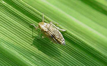
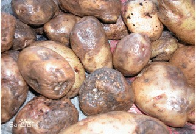

注册
|
登录
王学锋
退出
平台介绍
首页
专业大数据分析系统
大数据分析能力开放系统
数据运营平台
云数据开放平台
功能菜单
组件分组
新建专题
数据库链接
数据源配置
组件配置
组件展示
组件分组
知识库管理
水稻稻飞虱专题

稻飞虱，昆虫纲半翅目(Homoptera)飞虱科(Delphacidae)害虫。俗名火蠓虫。以刺吸植株汁液危害水稻等作物。常见种类有褐飞虱（Nilaparvata lugens）、白背飞虱(Sogatella furcifera)和灰飞虱(Laodelphax striatellus)。稻飞虱属同翅目飞虱科。危害水稻的主要有褐飞虱、白背飞虱和灰飞虱三种。危害较重的是褐飞虱和白背飞虱，早稻前期以白背飞虱为主，后期以褐飞虱为主；中晚稻以褐飞虱为主。灰飞虱很少直接成灾，但能传播稻、麦、玉米等作物的病毒。
修改专题信息
修改子菜单
马铃薯晚疫病专题

马铃薯晚疫病（Potato Late Blight）由致病疫霉引起，导致马铃薯茎叶死亡和块茎腐烂的一种毁灭性卵菌病害。叶片染病先在叶尖或叶缘生水浸状绿褐色斑点，病斑周围具浅绿色晕圈，湿度大时病斑迅速扩大，呈褐色，并产生一圈白霉，即孢囊梗和孢子囊，尤以叶背最为明显；干燥时病斑变褐干枯，质脆易裂，不见白霉，且扩展速度减慢。
修改专题信息
修改子菜单
马铃薯晚疫病专题
马铃薯晚疫病（Potato Late Blight）由致病疫霉引起，导致马铃薯茎叶死亡和块茎腐烂的一种毁灭性卵菌病害。叶片染病先在叶尖或叶缘生水浸状绿褐色斑点，病斑周围具浅绿色晕圈，湿度大时病斑迅速扩大，呈褐色，并产生一圈白霉，即孢囊梗和孢子囊，尤以叶背最为明显；干燥时病斑变褐干枯，质脆易裂，不见白霉，且扩展速度减慢。
修改专题信息
修改子菜单
copyright@2011 JinheTech.ALL rights reserved.版权所有金禾天成 京ICP备11009730